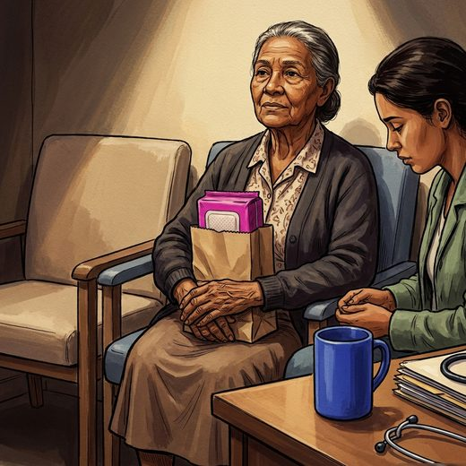

Consulta rápida à beira do leito
Condutas, doses e interações.
Referências da aula · 12
- Costa DL, et al. Associações independentes e agrupadas de atividade física e comportamento sedentário com incontinência urinária: dados de mulheres adultas e idosas do ELSI-Brasil. Cad Saude Publica. 2026;42:e00159125. doi:10.1590/0102-311XPT159125. PMID 41779525.PubMedDOI
- Jerez-Roig J, Santos MM, Souza DL, Amaral FL, Lima KC. Prevalence of urinary incontinence and associated factors in nursing home residents. Neurourol Urodyn. 2016;35(1):102-7. doi:10.1002/nau.22675. PMID 25307780.PubMedDOI
- Freitas EV, Py L, organizadores. Tratado de Geriatria e Gerontologia. 5ª ed. Rio de Janeiro: Guanabara Koogan; 2022.
- Gibson W, Johnson T, Kirschner-Hermanns R, et al. Incontinence in frail elderly persons: Report of the 6th International Consultation on Incontinence. Neurourol Urodyn. 2021;40(1):38-54. PMID 33085806. doi:10.1002/nau.24549.PubMedDOI
- Nicolle LE, Gupta K, Bradley SF, et al. Clinical practice guideline for the management of asymptomatic bacteriuria: 2019 update by the Infectious Diseases Society of America. Clin Infect Dis. 2019;68(10):e83-e110. PMID 30895288. doi:10.1093/cid/ciy1121.PubMedDOI
- Inouye SK, Westendorp RGJ, Saczynski JS. Delirium in elderly people. Lancet. 2014;383(9920):911-22. PMID 23992774. doi:10.1016/S0140-6736(13)60688-1.PubMedDOI
- Ruby CM, Hanlon JT, Boudreau RM, et al. The effect of medication use on urinary incontinence in community-dwelling elderly women. J Am Geriatr Soc. 2010;58(9):1715-20. PMID 20670377. doi:10.1111/j.1532-5415.2010.03006.x.PubMedDOI
- Resnick NM. Urinary incontinence. Lancet. 1995;346(8967):94-9. PMID 7603221. doi:10.1016/s0140-6736(95)92117-6.PubMedDOI
- Resnick NM, Yalla SV. Detrusor hyperactivity with impaired contractile function. An unrecognized but common cause of incontinence in elderly patients. JAMA. 1987;257(22):3076-81. PMID 3586227. doi:10.1001/jama.257.22.3076.PubMedDOI
- Resnick NM, Yalla SV. Management of urinary incontinence in the elderly. N Engl J Med. 1985;313(13):800-5. PMID 2863753. doi:10.1056/NEJM198509263131307.PubMedDOI
- Resnick NM, Yalla SV, Laurino E. The pathophysiology of urinary incontinence among institutionalized elderly persons. N Engl J Med. 1989;320(1):1-7. PMID 2909873. doi:10.1056/NEJM198901053200101.PubMedDOI
- Rochon PA, Gurwitz JH. Optimising drug treatment for elderly people: the prescribing cascade. BMJ. 1997;315(7115):1096-9. PMID 9366745. doi:10.1136/bmj.315.7115.1096.PubMedDOI
Documentos oficiais
Leis e publicações do Ministério da Saúde sobre o cuidado da pessoa idosa, de acesso livre.
Abrir os documentos